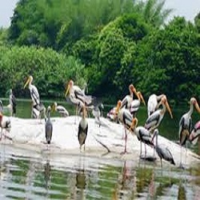
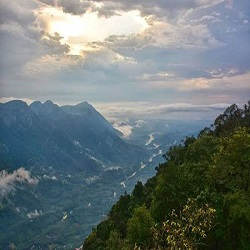
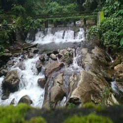

Kottayam
Kumarakom Bird Sanctuary
The Kumarakom Bird Sanctuary, also popularly known as the Vembanad Bird Sanctuary, is a breathtaking and beautiful bird sanctuary that is located at Kumarakom in the Kottayam district in the Indian state of Kerala. Situated on the banks of the Vembanad Lake in the Kerala Backwaters, this bird sanctuary is a favourite destination for many native as well as migratory birds, which makes the place a dreamland full of ecstasy and delight for bird watchers and nature lovers.
Read MoreIllikkal Kallu

Located at a height of 6000 ft above the sea level in the Western Ghats of Kottayam, Kerala, Illikkal Kallu is a major tourist attraction and one of the most pristine spots in all of India. Situated in Moonnilavu Village, Meenachil taluk, the nearest city to the summit is Teekoy. Besides several other factors which make this peak unique, the most prominent feature is that half the boulder of the majestic rock has fallen apart. The remaining half stands sturdy and presents an extremely exalted picture. Surrounded by colossal green hills, the offbeat destination boasts of immaculate environs, enchanting panoramic vistas and an all around utopian atmosphere.
Read MoreNadukani
Nadukani is one of the popular hill stations near Kottayam and is a major picnic spot. Nadukani offers wonderful views of the landscapes covered in dense forests, Nilgiri mountains, Muvattupuzha river, mystical valleys, and colorful flora. One of the popular tourist places near Kottayam, Nadukani has emerged as the new go-to spot for youngsters and couples looking for refuge. Take buses or private taxis to reach Nadukani from Kottayam. At the end, the trip would be truly worth it.
Read MoreMarmala Waterfalls
Located in Erattupetta near Kottayam, Marmala waterfall is one of the places to visit if you’re looking for some adventure. It’s difficult to reach the waterfalls as only jeeps can traverse the narrow trodden paths. However, all the hardship is worth the sweat for the adventure-seeking tourists. The difficult journey adds to the overall charm of these mystical falls. The beauty and the calm make up for the dangerous paths, it is also one of the best waterfalls near Kottayam to visit.
Read More